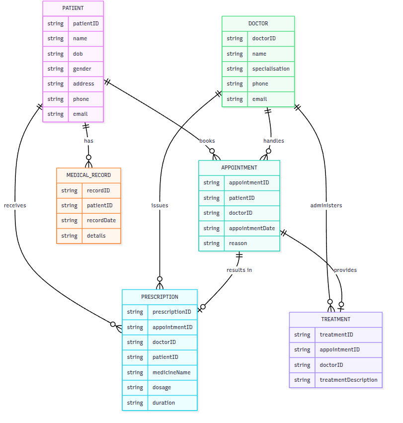
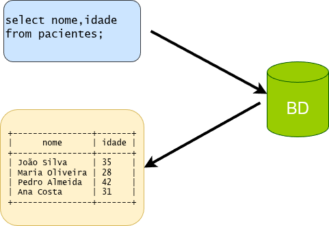
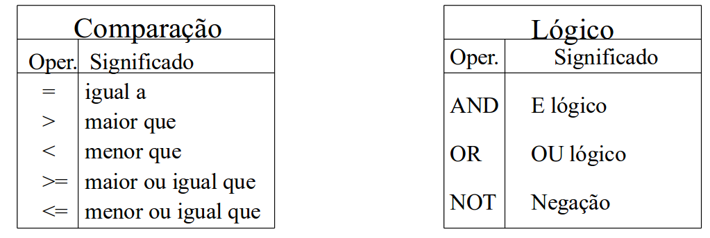
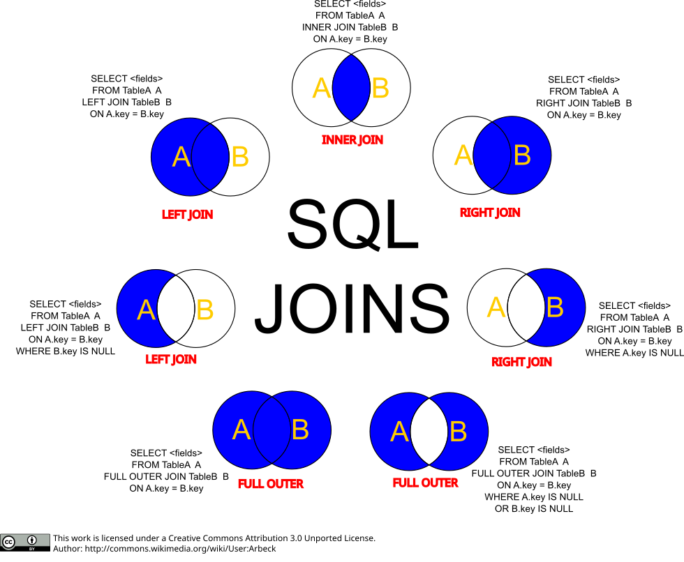
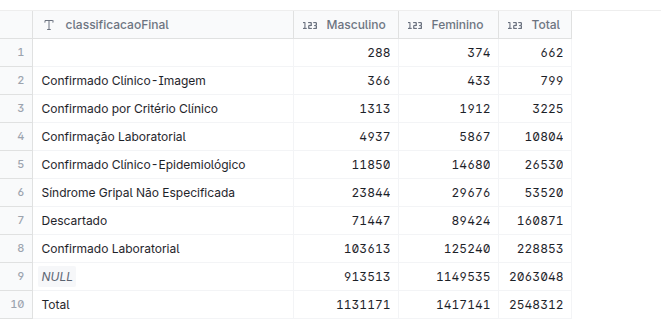

2 Banco de Dados & SQL
2.1 Introdução
Você já parou para pensar na quantidade de dados que geramos no dia-a-dias? Quando postamos uma foto em uma rede social, fazemos uma compra online, assistimos a um vídeo, ou usamos um aplicativo de transporte — tudo isso envolve um banco de dados por trás.
Bancos de dados são essenciais em praticamente todas as áreas onde computadores são utilizados: negócios, engenharia, educação, medicina, e a lista continua. Eles não são apenas um amontoado de informações — para ser um banco de dados, é preciso que esses dados estejam organizados, estruturados e prontos para serem consultados.
Por isso, um arranjo aleatório de informações não é um banco de dados. E, embora úteis, planilhas não oferecem a mesma estrutura e funcionalidades de um sistema de gerenciamento de banco de dados (SGBD).
2.2 Sistema Gerenciador de Banco de Dados
Um Sistema Gerenciador de Banco de Dados (SGBD) é uma coleção de programas que habilitam usuários a criar e manter um banco de dados.
O SGBD é um software de propósito geral, que facilita o processo de definição, construção e manipulação de um banco de dados.

Exemplos de SGBDs populares:
- MySQL (muito usado em aplicações web)
- PostgreSQL (foco em robustez e recursos avançados)
- SQLite (leve e ideal para aplicações locais ou mobile)
- Oracle Database ($$$, amplamente utilizado em grandes corporações)
- Duckdb (moderno, usa filosofia OLAP, crescendo rapidamente)
- SQL Server (desenvolvido pela Microsoft) 🤮🤮🤮
2.3 Terminologia Básica
Antes de trabalhar com SQL, é importante entender a linguagem básica dos bancos de dados. Esses termos descrevem como as informações são organizadas e manipuladas dentro de um SGBD.

- Campo: unidade básica de informação mínima com significado (coluna).
- Registro: conjunto de campos (linha).
- Atributo: área que pode conter um tipo de dados. É a interseção de uma linha com uma coluna.
- Tabela: conjunto de registros.
- Banco de Dados (BD): conjunto de tabelas e as formas de manipulação (relacionamentos).
- Modelo de Dados: conjunto de conceitos utilizados para descrever a estrutura de um BD, ou seja, os tipos de dados, relacionamentos e restrições sobre estes dados.
- Modelo Relacional: representa os dados em um BD por meio de um conjunto de relações.
- Chave Primária: coluna que identifica com exclusividade cada linha de um tabela.
- Chave Estrangeira: coluna ou conjunto de colunas referente a uma chave primária de uma outra tabela. A partir da chave estrangeira podemos relacionar tabelas (join).
2.4 Modelo de Dados
Um Modelo de Dados consiste de um conjunto de conceitos utilizados para descrever a estrutura de um BD, ou seja, os tipos de dados, relacionamentos e restrições sobre estes dados.
No Modelo Relacional representa-se os dados em um BD por meio de um conjunto de relações.
Existem diferentes técnicas e tipos de representação de um modelo de dados, como:
- Modelo Externo (visões específicas para determinados usuários ou aplicações)
- Modelo Conceitual (representação abstrata e independente de tecnologia)
- Modelo Entidade-Relacionamento (ER) (foco em entidades, atributos e relacionamentos)
Abaixo temos um exemplo de um diagrama de entidade-relacionamento (ER) para um sistema de prontuário eletrônico:

No diagrama acima, podemos identificar três elementos principais: entidades, atributos e relações:
- Entidades: Representam os objetos principais do sistema (ex:
Paciente,Médico,Prontuário Eletrônico). - Atributos: Informações associadas a cada entidade (ex:
ID,sexo,dt nascparaPaciente). - Relações: Indicam como as entidades estão conectadas (ex: um
Pacientepode ter vários registros nos prontuários eletrônicos — relação 1:N; umMédicorealiza diversasConsultas(1:N)).
3 SQL - Structured Query Language
3.1 Introdução ao SQL
O SQL (Structured Query Language) foi criado em 1974 por Donald D. Chamberlin e Raymond F. Boyce, pesquisadores da IBM. Originalmente chamado SEQUEL (Structured English Query Language), ele foi desenvolvido para gerenciar e manipular dados de diferentes bancos de dados relacionais existentes na época.
Desde a década de 1990 tornou-se a linguagem mais popular para acesso a bancos de dados, associado à difusão dos SGBDs relacionais. Neste mesmo ano, a Oracle lançou seu primeiro SGBD totalmente em SQL.
Em inglês SQL é pronunciado como S-Q-L ou SEQUEL.
Atualmente SQL é a linguagem padrão para bancos de dados relacionais. Os principais Bancos de Dados Relacionais operam com alguma forma de SQL.
Existem dois tipos básicos de linguagem:
Linguagem procedural: fornece uma descrição detalhada de COMO uma tarefa é realizada, operando sobre um registro ou uma unidade de dados a cada vez. Ex:
C,Javaetc…Linguagem não procedural: é uma descrição de O QUE se deseja, onde o sistema deverá determinar a forma de fazer. Ex:
SQL,HTML.
SQL é uma linguagem não procedural, pois permite expressar consultas e operações em bancos de dados (como seleção, inserção e atualização de dados) sem especificar como o sistema deve executá-las. O usuário declara o que deseja, e o SGBD (Sistema Gerenciador de Banco de Dados) determina como atender a solicitação.
Para efeitos didáticos, podemos organizar os módulos do SQL nas seguintes categorias:
Definição (DDL): criação do esquema (tabelas e relacionamentos) que atenderá as necessidades no BD;
Manipulação (DML): inclusão, deleção e modificação dos dados no BD;
Consulta (DQL): realização de consultas no BD;
Acessos (DCL): Controlar permissões e acesso definindo quem pode fazer o que com os tabelas e dados;
A tabela abaixo resume as principais subcategorias dos comandos em SQL.
| Abreviação | Nome completo | Propósito | Exemplos de comandos | DuckDB? |
|---|---|---|---|---|
| DDL | Data Definition Language | Criar, modificar ou excluir estruturas de dados | CREATE, ALTER, DROP |
✅ Sim |
| DML | Data Manipulation Language | Inserir, atualizar, excluir ou selecionar dados | SELECT, INSERT, UPDATE, DELETE |
✅ Sim |
| DQL | Data Query Language | Recuperar dados (subcategoria do DML) | SELECT, FROM, WHERE, JOIN |
✅ Sim |
| DCL | Data Control Language | Controlar permissões e acesso aos dados | GRANT, REVOKE |
❌ Não |
3.2 Exemplo de uma consulta (DQL)
select nome,idade from pacientes ; 
3.3 Definição e Manipulação (DDL & DML)
Para iniciar a definição de um BD é necessário conhecer os tipos de dados que o BD manipula. Existe uma grande quantidade de diferentes tipos, mas, de uma maneira geral, os tipos mais frequentes são:
- Numéricos:
INT,BIGINT,DECIMAL,FLOAT,DOUBLE - Data/Hora:
DATE,TIME,DATETIME,TIMESTAMP - Texto:
CHAR,VARCHAR,TEXT,NCHAR,NVARCHAR - Booleanos:
BOOLEAN,BIT - Binários:
BINARY,VARBINARY,BLOB - Intervalos:
INTERVAL(representa um intervalo de tempo)
Obs: O dado faltante é chamado NULL.
3.3.1 Criando uma tabela
Para criar uma tabela será usada a declaração SQL (DDL) create table. De uma maneira geral:
create table <nome_tabela> (
campo_1 <tipo de dado>,
campo_2 <tipo de dado>,
campo_3 <tipo de dados>
) ;O ponto e vírgula encerra uma instrução deixando-a pronta para ser executada após o
Exemplo
Como seria a criação de uma tabela que armazenaria os nomes e siglas de todas a UF?
CREATE TABLE estados (
uf integer,
sigla char(2),
regiao char(2),
nome varchar(50)
) ; 3.3.2 Inserindo dados (populando a tabela)
Instrução INSERT é usada para inserir dados na tabela.
INSERT INTO <tabela>[(coluna_1,...,coluna_n)] VALUES (valor_1,...,valor_n);Exemplo:
INSERT INTO estados(uf, sigla, regiao, nome)
VALUES (33, 'RJ', 'SE', 'Rio de Janeiro');
INSERT INTO estados
VALUES (31, 'MG', 'SE', 'Minas Gerais');
INSERT INTO estados(sigla, nome, uf, regiao)
VALUES ('SP', 'São Paulo', 35, 'SE');
INSERT INTO estados(nome, regiao, uf, sigla)
VALUES ('Espirito Santo', 'SE', 32, 'ES');
INSERT INTO estados(sigla, regiao, nome)
VALUES('GO', 'CO', 'Goias'); -- uf vai receber NULLA modificação dos registros é feita usando o comando UPDATE. Por exemplo:
UPDATE estado SET nome = 'Goiás', uf = 52 WHERE sigla = 'GO'; 3.3.3 Apagando os Dados
Instrução DELETE é usada para remover uma ou registros da tabela, possuindo duas formas básicas:
DELETE FROM <tabela>;\
-- ou
DELETE FROM <tabela> WHERE <condição>;A primeira forma é obrigatória e apaga todos os dados da tabela, enquanto que a segunda possui uma parte opcional, a partir do WHERE, que apaga somente os dados da tabela que atendem a uma condição (ou condições) imposta pela cláusula WHERE. Exemplo:
DELETE FROM ESTADOS WHERE SIGLA = 'SP'; -- 1 linha deletada
DELETE FROM ESTADOS WHERE NOME = 'ACRE'; -- nenhuma linha encontrada
DELETE FROM ESTADOS; -- todas as linhas deletadas ATENÇÃO. 3.3.4 Remover uma Tabela
Para se remover uma tabela deve-se usar o comando DROP TABLE.
DROP TABLE <nome_da_tabela>;Por meio deste comando a tabela deixará de existir neste banco de dados, sendo todas as informações contidas nela vão ser TOTALMENTE apagadas (não tem como desfazer).
Exemplo:
DROP TABLE ESTADOS; -- Tabela eliminada3.4 Consulta (DQL)
Instrução SELECT é a essência da linguagem SQL. É por meio dela que se recupera dados de um banco de dados. De modo simples, forma declarativa, está se dizendo ao BD quais informações foram selecionadas para serem recuperadas.
Pode-se dividir esta instrução em quatro partes básicas:
SELECTseguido dos atributos que se deseja ver (obrigatório)FROMseguido de onde se obterão os dados (obrigatório)WHEREseguido das restrições de recuperação (opcional)ORDER BYseguido da forma como os dados serão classificados (opcional)GROUP BYserve para agregar os dados (opcional)
O símbolo asterisco * significa que todos atributos da relação informada deverão ser recuperados.
Exemplo:
SELECT * from ESTADO;
select * FROM estado WHERE SIGLA='GO' OR NOME='Acre' ; SELECT será a instrução mais comumente usada na linguagem SQL. Repare que o SQL não é case sensitive como a maioria das linguagens!
Na cláusula WHERE serão utilizados alguns operadores de comparação e lógicos para que a condição seja especificada. Os operadores logicos usados em SQL são:

3.4.1 Criando novas tabelas a partir de tabelas existentes
É muito simples a criação de novas tabelas a partir de outras, basta usar o CREATE TABLE com o resultado de um SELECT.
CREATE TABLE sudeste AS (SELECT * FROM estados WHERE regiao = 'SE') ;3.4.2 Joins (Relacionando as Tabelas)
Existem diversas maneiras de se fazer o relacionamento entre duas tabelas. Os mais comuns são:
INNER JOIN: Este é simples e comumente empregado. Esta query retornará todos os registros da tabela A (esquerda) que têm correspondência com a tabela B (direita). Ou seja, o que existe de comum entre A e B. Podemos escrever este JOIN da seguinte forma:
SELECT * FROM A INNER JOIN B ON A.chave = B.chaveLEFT JOIN: Esta consulta retorna todos os registros da tabela A (esquerda) e o que existir em comum com a tabela B (direita). O código fica da seguinte forma:
SELECT * FROM A LEFT JOIN B ON A.chave = B.chaveOUTER JOIN: Este relacionamento é conhecido também comoFULL OUTER JOINouFULL JOIN. Esta consulta retornará todos os registros das duas tabelas e juntando também os registros correspondentes entre as duas tabelas. O que for diferente nas duas tabelas ficara com o valor NULL. O código ficará da seguinte forma:
SELECT * FROM A FULL OUTER JOIN B ON A.chave = B.chave Fonte da figura
3.5 Principais funções usadas em SQL
Seguem algumas funções comumente usadas em SQL, lembre-se que cada versão e SGDB usa dialetos diferentes.
Funções matemáticas (mais comumente usadas):
ABS(n): Devolve o valor absoluto den.CEIL(n): Obtém o valor inteiro imediatamente superior ou igual an.FLOOR(n): Devolve o valor inteiro imediatamente inferior ou igual an.MOD(m, n): Devolve o resto resultante de dividirmentren.POWER(m, exponente): Calcula a potência de um número.ROUND(número [, m]): Arredonda números com o número de dígitos de precisão indicados.SIGN(valor): Indica o sinal dovalor.SQRT(n): Devolve a raiz quadrada den.TRUNC(número, [m]): Trunca números para que tenham uma certa quantidade de dígitos de precisão.
Funções Agregadas :
COUNT ( * | Expressão): Conta o número de ocorrências (A opção “*” conta todos os registros selecionados).AVG (n): Calcula o valor médio denignorando os valores nulos.MAX (expressão): Calcula o máximo.MIN (expressão): Calcula o mínimo.SUM (expressão): Obtém a soma dos valores da expressão (se houverNULLretornaNULL).TOTAL (expressão): soma ignorandoNULL.
Funções de caracteres:
CONCAT (str1, str2): Devolve “str1” concatenada com “str2”.LOWER (str): Devolve a string em minúsculas.UPPER (str): Devolve a string em maiúsculas.SUBSTR (str, m [,n]): Obtém parte de uma string.LENGTH (str): Devolve o número de caracteres de str.REPLACE (str, cadeia_busca [, cadeia_substituição]): Substitui um caractere ou caracteres de uma cadeia com 0 ou mais caracteres.
Funções de datas:
DATE(): Retorna a data ou transforma em data.TIME(): Retorna tempo.STRFTIME(fmt, data): Formata a data.
Exemplos:
SELECT count(*) from Estados;
SELECT now() ;
SELECT round(355.0 / 113.0,6) ; -- que número é esse? Teste sem o .0Para saber mais sobre os tipos de dados e funções do duckDB consulte o Documentação online do duckDB.
3.6 Exercícios e prática
Usando o duckDB (instalação feita aqui), faça os exercícios a seguir.
Crie a tabela pessoas:
-- Criar tabela pessoas
CREATE TABLE pessoas (
cpf BIGINT PRIMARY KEY,
nome VARCHAR(100),
idade INT,
sexo VARCHAR(10),
telefone VARCHAR(20),
uf int
);Insira dados na tabela pessoas:
-- Inserir dados de pessoas
INSERT INTO pessoas (cpf, nome, idade, sexo, telefone,uf)
VALUES
(12345678901, 'João Silva', 35, 'Masculino', '(21) 98765-4321',33),
(23456789012, 'Maria Oliveira', 28, 'Feminino', '(21) 99565-0987',33),
(34567890123, 'Pedro Almeida', 42, 'Masculino', '(31) 78765-4323', 31),
(45678901234, 'Ana Costa', 31, 'Feminino', '(11) 98765-4324',35),
(56789012345, 'Lucas Ferreira', 25, 'Masculino', '(21) 98765-4325',31),
(67890123456, 'Julia Santos', 29, 'Feminino', '(22) 98765-4326',32),
(78901234567, 'Ricardo Lima', 50, 'Masculino', '(11) 98765-4327',35),
(89012345678, 'Fernanda Souza', 33, 'Feminino', '(65) 98765-4328', 52),
(90123456789, 'Mateus Pereira', 40, 'Masculino', '(21) 98765-4329',33),
(10234567890, 'Isabela Lima', 27, 'Feminino', '(68) 98765-4330',11);Crie a tabela estados:
CREATE TABLE estados (
uf INT PRIMARY KEY,
sigla VARCHAR(2),
nome VARCHAR(50),
regiao VARCHAR(20)
);Insira dados na tabela estados:
INSERT INTO estados (uf,sigla,nome,regiao)
VALUES
(12,'AC','Acre','Norte'),
(13,'AM','Amazonas','Norte'),
(14,'RR','Roraima','Norte'),
(15,'PA','Pará','Norte'),
(16,'AP','Amapá','Norte'),
(17,'TO','Tocantins','Norte'),
(21,'MA','Maranhão','Nordeste'),
(22,'PI','Piauí','Nordeste'),
(23,'CE','Ceará','Nordeste'),
(24,'RN','Rio Grande do Norte','Nordeste'),
(25,'PB','Paraíba','Nordeste'),
(26,'PE','Pernambuco','Nordeste'),
(27,'AL','Alagoas','Nordeste'),
(28,'SE','Sergipe','Nordeste'),
(29,'BA','Bahia','Nordeste'),
(31,'MG','Minas Gerais','Sudeste'),
(32,'ES','Espírito Santo','Sudeste'),
(33,'RJ','Rio de Janeiro','Sudeste'),
(35,'SP','São Paulo','Sudeste'),
(41,'PR','Paraná','Sul'),
(42,'SC','Santa Catarina','Sul'),
(43,'RS','Rio Grande do Sul','Sul'),
(50,'MS','Mato Grosso do Sul','Centro-Oeste'),
(51,'MT','Mato Grosso','Centro-Oeste'),
(52,'GO','Goiás','Centro-Oeste'),
(53,'DF','Distrito Federal','Centro-Oeste');Siga os passos abaixo:
Certifique-se que as tabelas foram criadas listando o conteúdo de cada uma delas (dica: use
SELECT).Insira mais um registro a tabela
pessoasusando o comando abaixo:
insert into pessoas values (53565635794, 'Joana da Silva', 33, 'Feminino', '', NULL) ;- O registro foi inserido?
NULLé igual a ’’ ?- Qual é a idade média das pessoas?
- Em seguida, vamos adicionar mais um registro:
insert into pessoas values (78901234567, 'Carlos Valente',53,'Masculino','(21)9765-4320',26) ;- O registro foi inserido?
- Em caso negativo, alguma ideia do motivo ?
- Que campo você deve modificar para poder incluir esse registro?
- Você quer saber qual a frequência por
sexona tabelapessoase usou o código abaixo:
select sexo, count(sexo) from pessoas - Funcionou? (lembre-se do terminador)
- Funcionou quando adicionou o ‘;’ ? (dica: leia as mensagens de erro com atenção)
- Faça um join entre as tabelas
pessoaseestados.
select * from pessoas
left join estados on pessoas.uf = estados.uf ;- Por que a Isabela Lima e a Joana da Silva ficaram sem UF?
- Faça agora um
INNER JOINe responda o que muda em relação aoleft join.
select * from pessoas
inner join estados on pessoas.uf = estados.uf ;- Vamos corrigir os problemas nas nossas tabelas:
- Insira na tabela estados uma linha para Rondônia (RO) que tem o código 11 e está na região norte.
- Modifique o registo de Joana da Silva para a UF 29 (lembre-se de usar
wherepara especificar o que vai ser alterado).
Selecione com o mouse para ver a resposta no box abaixo!
INSERT INTO estados VALUES (11,‘RO’,‘Rondônia’,‘Norte’) ;
UPDATE pessoas set uf = 29 where cpf = ‘53565635794’;
Agora que nosso dado está devidamente corrigido, vamos criar uma nova tabela chama pessoa_uf que recebe os dados unidos de ambas as tabelas.
create or replace table pessoa_uf as (
select * from pessoas as p
left join estados as e on p.uf = e.uf );
-- Aqui poderíamos usar o INNER JOIN pois ficariam iguais!Aqui um exemplo de como qualquer tabela pode ser facilmente exportada para csv (neste caso csv2, com delimitador “;” , o default é , .
COPY pessoa_uf TO 'pessoas.csv' (HEADER, DELIMITER ';');3.6.1 Importando arquivos remotos
3.6.1.1 Importando CSV com a população do TCU de 2024
-- lendo a população do TCU por muni do github
create table tcu as (
select * from
'https://raw.githubusercontent.com/ogcruz/curso_DS2025/refs/heads/main/sql/poptcu_2024.csv') ; -- cria a a coluna numérica UF
create or replace table tcu as (
select substr(MUNI_RES::CHAR,1,2) as uf,*, from tcu) ;-- soma a população por UF
create table pop_tcu as (
select uf,sum(POPULACAO) as pop2024 from tcu group by uf order by pop2024 desc ) ;-- atualiza a tabela estados com a pop do TCU de 2024
create table estados as (
select * from estados e
left join pop_tcu p on e.uf = p.uf
order by e.uf ) ;3.6.1.2 Importando um parquet com ESUS do RJ de 2020
Vamos importar um arquivo paquet com cerca de ~2.56 milhões de registos direto da nuvem da Fiocruz. O tamanho do arquivo em CSV é de cerca de 900MB, já em parquet 140MB (15% do CSV).
Parquet é um formato de armazenamento colunar , amplamente utilizado em ecossistemas de big data por ser muito eficiente tanto na leitura quanto na escrita, suporta diferentes algoritmos de compressão de dados e é altamente portável é suportado por ferramentas de Big Data e também em Python, R, Julia, DuckDB entre outros.
Para ler arquivos externos em geral o duckDB já vem com a extensão httpfs pré-instaladas por default
Essa extensão é a responsável por ler e escrever remotamente, ela dá suporte a leitura por http e https e leitura e escrita usando S3 (protocolo da Amazon Clould)
Caso você tenha algum problema aqui está o código para instalar, mas não deve ser necessário fazer essa instalação.
INSTALL httpfs;
LOAD httpfs;Antes de começar um projeto maior no duckDB é recomendável ajustar o tamanho da memória e número de núcleos da CPU que o duckDB poderá usar.
Você deve ajustar esses parâmetros conforme a quantidade de RAM do seu sistema e a quantidade de núcleos (cores) da sua CPU. Nas CPU modernas um núcleo roda 2 tarefas (Threads) por núcleo. Para a quantidade de memoria um parâmetro 4GB é razoável, mas a depender do dado pode ser necessário aumentar esse valor. Já para a CPU aposta segura é que toda a maquina é no mínimo um dual core atualmente.
Mas lembre-se que se você for usar também o R ou alguma outra linguagem / ‘software’ simultaneamente você deve ajustar esses valores.
SET memory_limit = '4GB'; -- ajuste de acordo
SET threads TO 4; -- toda cpu moderna tem no minimo 4 threadsCREATE TABLE esus as (
SELECT *
FROM 'https://own.procc.fiocruz.br/DS2025/esus_rj.parquet'
);
-- cerca de 15 segundos DESCRIBE esus ; Note que a maioria das variáveis foi importada como VARCHAR somente index e testeSorologico são inteiros e idade é um double
select * from esus limit 100; 3.6.2 Limpando a tabela do ESUS
Vamos proceder algumas transformações para transformar os campos dataNotificacao, dataInicioSintomas e dataTeste de texto para data. Repare que eles são, na verdade, do tipo timestamps assim temos de fazer uma dupla transformação, de texto para timestamp e depois de timestamp para date. Vamos aproveitar e colocar um filtro de data de primeiro sintomas maior ou igual a 1 de março de 2020 e salvar em uma tabela esus2.
create or replace table esus2 as (
select index,
cast(dataNotificacao::TIMESTAMP as date) as dt_not , --converte pra data
cast(dataInicioSintomas::TIMESTAMP as date) as dt_sint,
cast(dataTeste::TIMESTAMP as date) as dt_test,
* EXCLUDE (dataNotificacao,dataInicioSintomas,dataTeste,index_1) --não há virgula!!!
from esus where dt_sint >= '2020-03-01'
) ;Podemos visualizar a nova tabela usando o comando select … como já fizemos antes no, entretanto existe um atalho para isso. use o painel a direita do duckDB UI para explorar a nova tabela.
from esus2;3.6.3 Listando
Como fazer uma listagem dos nomes dos município do estado do Rio de Janeiro que constam da tabela esus2 ?
select distinct municipio
from esus2
where estado = 'RIO DE JANEIRO'
order by municipio;Note que no comando acima temo o uso do DISTINCT é usado para eliminar registros duplicados de um resultado da consulta. O uso de DISTINCT pode impactar a performance, especialmente em tabelas grandes, pois o SQL precisa ordenar e remover duplicados.
caso eu queira saber quantos são:
select count(distinct municipio)
from esus2;3.7 Exemplos de tabulações
3.7.1 Tabulações simples
Tabulações simples podem ser obtidas usando alguma função de agregação como count,sum,avg e combinadas com group by e order by
select racaCor,count(racaCor) as freq
from esus2
group by racaCor
order by freq desc;3.7.2 Tabulações avançadas
Tabulações avançadas como tabelas cruzadas necessitam de códigos mais complexos usando CASE WHEN , PIVOT , WITH , subquery etc…
Abaixo um exemplo geral de como fazer uma tabela cruzada num SQL qualquer(a versão ISO-92 foi uma das grandes revisões, a mais atual é a ISO-2023).
SELECT
classificacaoFinal,
SUM(CASE WHEN sexo = 'Masculino' THEN 1 ELSE 0 END) AS Masculino,
SUM(CASE WHEN sexo = 'Feminino' THEN 1 ELSE 0 END) AS Feminino,
Masculino+Feminino as Total
FROM esus2
GROUP BY 1
ORDER BY 2 ;Usando o dialeto SQL do duckDB (o PostgreSQL é 98% semelhante ) podemos usar o comando PIVOT que reorganiza dados de uma tabela, transformando valores de uma coluna em nomes de colunas e aplicando uma função de agregação para calcular os valores correspondentes.
No uso a seguir não temos a categoria Total que teria de ser implementada de outra forma. Por outro lado, o comando é mais enxuto e objetivo.
SELECT * FROM (
SELECT classificacaoFinal, sexo
FROM esus2
) PIVOT (COUNT(*) FOR sexo IN ('Masculino', 'Feminino'))
ORDER BY 2 ;E se quiséssemos adicionar uma linha final totalizando todas as classificações?
SELECT
'Total' AS classificacaoFinal,
SUM(CASE WHEN sexo = 'Masculino' THEN 1 ELSE 0 END) AS Masculino,
SUM(CASE WHEN sexo = 'Feminino' THEN 1 ELSE 0 END) AS Feminino,
Masculino + Feminino AS Total
FROM esus2
ORDER BY TotalE como colocar tudo isso junto numa mesma query?
SELECT
classificacaoFinal,
SUM(CASE WHEN sexo = 'Masculino' THEN 1 ELSE 0 END) AS Masculino,
SUM(CASE WHEN sexo = 'Feminino' THEN 1 ELSE 0 END) AS Feminino,
Masculino + Feminino AS Total
FROM esus2
GROUP BY 1
UNION ALL
SELECT
'Total' AS classificacaoFinal,
SUM(CASE WHEN sexo = 'Masculino' THEN 1 ELSE 0 END) AS Masculino,
SUM(CASE WHEN sexo = 'Feminino' THEN 1 ELSE 0 END) AS Feminino,
Masculino + Feminino AS Total
FROM esus2
ORDER BY TotalSe você fez tudo corretamente deve chegar a uma tabela como essa:

3.7.2.1 Common Table Expression (CTE)
Uma CTE é uma subconsulta que pode ser nomeada e usada dentro de uma consulta SQL subsequente. Ela é definida com a cláusula WITH e serve para organizar e simplificar consultas complexas, tornando o código mais legível e fácil de manter.
WITH filtro_obito as (
select *
from esus2
where evolucaoCaso = 'Óbito' and regexp_matches(classificacaoFinal,'^Confirmado','i')
)
SELECT sexo,
count(*) as freq ,
ROUND((freq * 100.0 / (SELECT COUNT(*) FROM filtro_obito )), 2) AS percentual
from filtro_obito
group by 1;Note o uso de uma das funções de expressão regular (regexp_matches) para selecionar todos que começam pela palavra “Confirmado” . Existem muitas funções que lidam com textos e o uso delas em especial das expressões regulares nos possibilita uma enorme gama de soluções rápidas e simples.
Vamos ver mais sobre esse assunto na próxima aula.
3.8 Conclusão
Conclusões da aula de SQL
Esses são apenas os primeiros passos no SQL há muito mais a ser aprendido como vocês viram ele é flexível e relativamente simples ainda que tenhamos de escrever um código um tanto mais longo se comparado ao R.
SQL é linguagem nativa para manipulação e consulta de dados em bancos relacionais, enquanto R e Python são linguagens gerais
SQL é otimizado para consultas em grandes volumes de dados armazenados em bancos, com suporte a índices, otimização de consultas e ACID (atomicidade, consistência, isolamento, duração).
SQL é padrão para interagir com bancos de dados, facilitando a manipulação de dados diretamente no armazenamento, sem precisar carregar todos os dados em memória (como em R/Python)
SQL é mais eficiente para consultas distribuídas (ex: clusters, bancos em nuvem)
Onde aprender mais sobre SQL:
Existem muitos tutoriais em plataformas de cursos (a maioria não é gratuita) , livros, capítulos de livros , apostilas e vídeos no youtube.
Abaixo alguns recursos gratuitos: